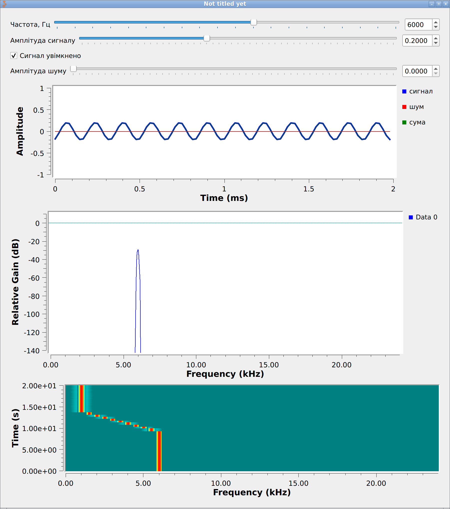
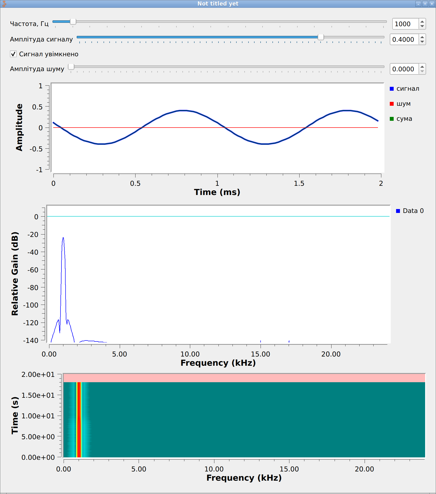
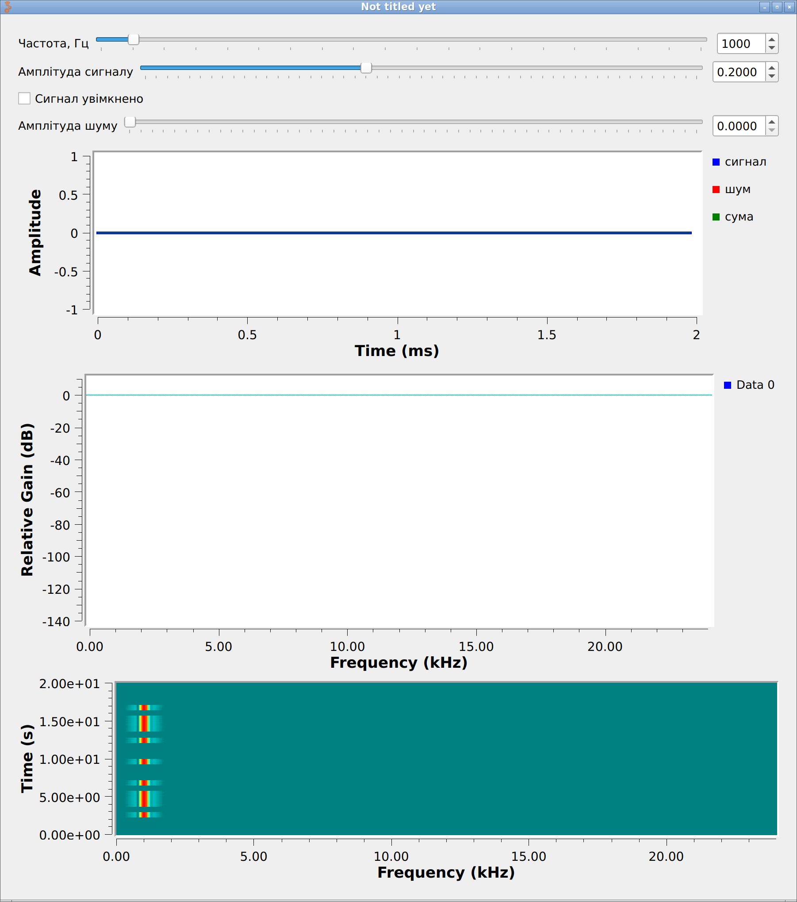

Тема 2. Відповіді
Вправа № 1. Упізнайте сигнал
Рис. 2.7 показує 20 секунд ефіру, з 10:33:05 до 10:33:25. Частоту читають на осі над вікном, у мегагерцах. Частотою сигналу вважаємо середину його смуги (крок 1). Час іде згори вниз. Кожен сигнал записав приймач поблизу його джерела.
| Сигнал | Частота (крок 1) | Ширина смуги (крок 1) | У часі (крок 2) | За частотою (крок 2) | Джерело (крок 3) |
|---|---|---|---|---|---|
| 1 | 310,5 МГц | 25 кГц, тобто 0,025 МГц | передачі по кілька секунд | на одній частоті | Радіостанція підрозділу |
| 2 | 900 МГц | 10 МГц: від 895 до 905 МГц, 3 ділянки по 2 МГц | нерегулярні сплески | кожен телефон у своїй частині смуги | Мобільні телефони |
| 3 | близько 2440 МГц | близько 80 МГц, точно 83,5 МГц: від 2400 до 2483,5 МГц. Один сплеск завширшки 1 МГц | короткі сплески | стрибає по всій смузі | Пульт керування безпілотником |
| 4 | 3000 МГц | 0,5 МГц | сплески через рівні проміжки: кожні 10 с | на одній частоті | Радар |
| 5 | 5600 МГц | 1 МГц | сплески через рівні проміжки: кожні 4 с | на одній частоті | Радар |
| 6 | 5800 МГц | 20 МГц | без пауз | на одній частоті | Передавач відео з безпілотника |
Крок 3. Однаковий портрет мають сигнали 4 і 5: обидва належать радарам. Розрізнити їх можна за частотою і за проміжком між сплесками. На карті рис. 1.4 немає джерела «Мобільні телефони».
Крок 4. Усі шість сигналів лежать у смузі від 25 до 6000 МГц і всі є в ефірі в ці 20 секунд, тож умови частоти й часу виконано. Лишається перевірити потужність і напрямок: чи не за радіогоризонтом джерело і чи випромінює воно в бік поста. Межу на карті проведено для антени на висоті 2 м: джерело з такою або вищою антеною пост чує, якщо воно ближче, ніж межа. Висоти антен наведено в кроці 4 і в задачах 2 та 3, а передавач відео летить із безпілотником.
| Сигнал | Чи покаже його спектрограма поста П1 | Пояснення |
|---|---|---|
| 1 | так, коли передає Д1 або Д2 | Від поста до радіостанцій мережі на карті: до Д1 19,1 км, до Д2 15,3 км і до Д3 26,0 км. Межа на карті проходить за 21,8 км від поста: до неї він чує передавач з антеною на висоті 2 м. Д1 і Д2 стоять ближче, ніж межа, тож спектрограма покаже сигнал 1, коли передає Д1 або Д2. Д3 стоїть далі, ніж межа, а антена цієї радіостанції саме на висоті 2 м, тож її передач спектрограма не покаже. |
| 2 | за картою не визначити | Джерела «Мобільні телефони» на карті немає. Тому за картою не визначити, чи покаже його сигнал спектрограма поста. |
| 3 | так | Пульт керування безпілотником (Д5) за 9,0 км від поста: це ближче, ніж межа 21,8 км на карті. Спектрограма покаже сигнал 3. |
| 4 | ні | радар 1 (Д7) за 38,5 км від поста. Відстань до радіогоризонту для її антени на висоті 10 м і антени поста на висоті 15 м лише 29,0 км (задача 2). Прямим шляхом її сигнал до поста не доходить, тому спектрограма сигналу 4 не покаже. |
| 5 | так, сплесками | радар 2 (Д8) за 17,1 км від поста: це ближче, ніж межа 21,8 км на карті. На карті її позначено як вимкнену, але до цього часу її вже ввімкнули. Промінь її антени раз за оберт проходить повз пост, тому спектрограма покаже сигнал 5 сплесками. |
| 6 | так | Передавач відео з безпілотника (Д6) за 5,0 км від поста: це ближче, ніж межа 21,8 км на карті. Спектрограма покаже сигнал 6. |
Учителеві. Сигнал 4 дає за ці 20 секунд надто мало сплесків, щоб побачити рівні проміжки: їх видно на сигналі 5. Рис. 2.7 спрощує сигнали радара: рисунок показує лише сплески, коли промінь проходить повз приймач. Справжній приймач поблизу радара слабко чує його і між сплесками, бо антена трохи випромінює і вбік від променя. Тема про це не каже, тож учні цього знати не мусять.
Учителеві. За радіогоризонт сигнал потрапляє іншими шляхами, слабкий і нестійкий: про це йдеться в пункті 3 теми. Після чотирьох умов тема домовляється: у вправі й задачах умову потужності виконано, коли джерело не за радіогоризонтом. Тому вважаємо, що такого сигналу пост не приймає. Відповідь «покаже зрідка і слабко» для сигналу 4 і для передач Д3 теж зараховують, якщо учень посилається на пункт 3.
Учителеві. Пункт 3 теми каже, що хвилі вищих частот розсіює тропосфера. Навчальна програма називає це явище відбиттям радіосигналів від тропосфери. Слово «розсіює» точніше, тому тема вживає його.
Контрольні запитання
Чому кожен засіб працює у своєму діапазоні електромагнітного спектра?
Відповідь. Діапазон обирають за тим, як поширюються хвилі цих частот. Короткі хвилі, з частотами від 3 до 30 МГц, відбиваються від іоносфери й долають тисячі кілометрів, тому на них працюють далекий зв’язок і мовлення. Хвилі вищих частот поширюються майже прямолінійно, до радіогоризонту: на них працюють радіостанції на місцевості, безпілотники й радари.
Які ознаки складають «портрет» сигналу? Як прочитати їх на спектрограмі?
Відповідь. Портрет складають частота, ширина смуги, поведінка в часі й поведінка за частотою. На спектрограмі частоту показує місце позначки на осі частот, а ширину смуги показує розмір позначки вздовж цієї осі. Поведінку в часі показують довжина позначок і проміжки між ними вздовж осі часу. Якщо позначки щоразу з’являються на іншій частоті, сигнал стрибає.
Чому сигнал, що стрибає з частоти на частоту, важче перехопити?
Відповідь. Порядок стрибків знає лише приймач, якому призначено передачу. Чужий приймач, налаштований на одну частоту, спіймає лише окремі сплески, а не всю передачу.
Чому радіомовну станцію на коротких хвилях чути за тисячі кілометрів, а міську лише за десятки?
Відповідь. Короткі хвилі відбиваються від іоносфери й повертаються до Землі далеко за горизонтом. Міська станція мовить на частотах від 87,5 до 108 МГц (рис. 2.2). Ці хвилі поширюються майже прямолінійно, тож станцію добре чути лише до радіогоризонту. Далі доходить мала частка сигналу, слабка й нестійка.
Передавач виходить в ефір раз на добу на одну хвилину. Яку умову перехоплення це ускладнює? Що може зробити розвідка?
Відповідь. Умову часу: приймач має слухати саме тоді, коли передавач в ефірі. Розвідка може стежити за цією частотою безперервно, цілу добу, або записувати ефір і переглядати запис. Друга частина запитання відкрита: зараховують кожну відповідь, за якої приймач слухає в потрібну хвилину.
Задачі
Задача 1. Довжина хвилі в метрах дорівнює 300, поділеним на частоту в мегагерцах. Для 310,5 МГц: 300 / 310,5 = 0,97 м. Для 5800 МГц: 300 / 5800 = 0,052 м = 5,2 см. Перша хвиля довша у 18,7 раза: 5800 / 310,5 = 18,7.
Задача 2. d = 4,12 · (√15 + √10) = 4,12 · (3,87 + 3,16) = 29,0 км. До радара 1 від поста 38,5 км: це більше, ніж 29,0 км. Радар стоїть за радіогоризонтом, тож прямим шляхом його сигнал до поста не доходить.
Задача 3. За рівнянням Фрііса потужність сигналу обернено пропорційна квадрату відстані. Відстань зросла з 9 до 18 км, тобто у 2 рази, тож сигнал ослабне у 2 · 2 = 4 рази. Радіогоризонт для антени пульта на висоті 3 м: d = 4,12 · (√15 + √3) = 4,12 · (3,87 + 1,73) = 23,1 км. Це менше, ніж 27 км, тому з 27 км пост сигналу пульта не прийме: пульт буде за радіогоризонтом.
Творчі та групові завдання
Завдання 1. Спектрограма на сторінці теми й на аркуші є моделлю: станції на ній вигадано. На ній 6 станцій, на частотах 100,3; 100,9; 101,5; 102,1; 103,3 і 103,7 МГц. Смуга кожної близько 0,2 МГц, тобто майже дві клітинки сітки. Найсильніша станція мовить на частоті 102,1 МГц: її позначка найтемніша, тому на спектрі її горб найвищий. Найбільше вільне місце лежить між станціями на частотах 102,1 і 103,3 МГц: вільна смуга від 102,2 до 103,2 МГц. Зараховують і відповідь за краями цієї смуги. Менші проміжки між іншими станціями теж вільні. Зараховують спектр, на якому всі горби стоять на своїх частотах, мають однакову ширину і три різні висоти.
Завдання 2. Готової відповіді немає: значення залежать від джерел, які знайде учень. Зараховують таблицю, де для радіомовлення, Wi-Fi та Bluetooth наведено частоти, ширину смуги й потужність передавача, а біля кожного значення названо джерело. Для перевірки: радіомовлення працює на частотах від 87,5 до 108 МГц, а Wi-Fi та Bluetooth на частотах від 2400 до 2483,5 МГц. Wi-Fi зазвичай займає смугу 20 МГц, а один сплеск Bluetooth має ширину 1 МГц. Потужність передавачів Wi-Fi у цій смузі в Європі обмежено 100 мВт, а радіомовні станції мають потужність до десятків кіловатів.
Завдання 3. Приклад розрахунку з початковими числами калькулятора. Роутер має потужність 100 мВт, тобто 0,1 Вт, і працює на частоті 2400 МГц. Довжину хвилі калькулятор обчислює за правилом теми: 300 / 2400 = 0,125 м, тобто 12,5 см. На відстані 5 м антена приймає P₂ = 0,1 · (0,125 / (4π · 5))² Вт, тобто близько 396 нВт. Нановат (нВт) дорівнює мільярдній частці вата.
Завдання 3, запитання про відстань. Таблиця під калькулятором показує: на відстані 5 м антена приймає 396 нВт (−34 дБм), на відстані 10 м 98,9 нВт (−40 дБм), на відстані 50 м 3,96 нВт (−54 дБм). Коли відстань зростає вдвічі, потужність зменшується в 4 рази, а коли вдесятеро, то в 100 разів: за рівнянням Фрііса потужність обернено пропорційна квадрату відстані. У дужках подано ту саму потужність у децибелах відносно мілівата (дБм): 0 дБм дорівнює 1 мВт, а кожні 10 дБм униз означають удесятеро меншу потужність. У цих одиницях потужність сигналу Wi-Fi зазвичай показують застосунки.
Завдання 3, запитання про різницю. Рівняння Фрііса описує простір без перешкод. У кімнаті сигнал відбивається від стін і меблів та слабшає, проходячи крізь них. До того ж антени роутера й телефона працюють не однаково в усі боки. Тому виміряна потужність зазвичай нижча за обчислену і змінюється від місця до місця. Зараховують і таку причину: роутер може випромінювати менше, ніж дозволені 100 мВт.
Завдання 4. Коли змінюється частота, на графіку часу змінюється число коливань, на спектрі пік переходить на нову частоту, а на спектрограмі смуга йде до нової частоти сходинками. Коли зростає амплітуда, хвиля на графіку часу стає вищою, пік на спектрі піднімається, а колір смуги на спектрограмі майже не змінюється. У шумі сигнал першим зникає на графіку часу, а останнім на спектрограмі. Портрет передачі азбукою Морзе: смуга до 2,4 кГц, короткі й довгі сплески з паузами, одна частота. Із нього розвідка дізнається частоту передавача, час і тривалість його роботи.
Завдання 4, частота. Коли частота зростає, на графіку часу вміщується більше коливань: за 2 мс сигнал частотою 6000 Гц робить 6000 · 0,002 = 12 коливань замість двох. На одне коливання тепер припадає лише 48 000 / 6000 = 8 відліків, тому крива стає ламаною. На спектрі пік переходить на нову частоту й не залишає сліду: спектр показує лише цю мить. На частоті 6000 Гц пік вужчий і не має горбиків обабіч. Програма обчислює спектр із 1024 відліків, і сигнал цієї частоти робить у них рівно 128 коливань: 6000 · 1024 / 48 000 = 128. Коли у відрізку вміщується ціле число коливань, пік найвужчий. Спектрограма зберігає минуле: смуга на ній іде сходинками від старої частоти до нової, бо повзунок змінює частоту кроками по 500 Гц.

Завдання 4, амплітуда. Коли амплітуда зростає з 0,2 до 0,4, хвиля на графіку часу стає вдвічі вищою: значення сигналу змінюються вже від −0,4 до 0,4. Пік на спектрі піднімається з −29,3 до −23,3 дБ, тобто на 6 дБ. Децибели (дБ) порівнюють потужності: різниця в децибелах дорівнює десяти десятковим логарифмам (lg) відношення потужностей. Потужність сигналу пропорційна квадратові амплітуди, тому вдвічі більша амплітуда означає вчетверо більшу потужність: 10 · lg 4 ≈ 6 дБ. На спектрограмі колір смуги майже не змінюється. Блок QT GUI Waterfall Sink розподіляє свої кольори між −140 і 10 дБ, тобто на 150 дБ: так задано його параметри Intensity Min та Intensity Max. Тому 6 дБ змінюють колір ледь помітно.

Завдання 4, нижній край спектра. З амплітудою 0,4 біля нижнього краю спектра можна помітити дрібні позначки: пологий горб праворуч від піка і два ледь помітні штрихи на частотах 15 і 17 кГц. Це не помилка у схемі. Удвічі більша амплітуда піднімає на 6 дБ не лише пік, а всю криву спектра, тому над нижнім краєм спектра з’являються найнижчі частини кривої. З амплітудою 0,2 ці частини кривої лежали під нижнім краєм спектра. Горб, як і схили піка, з’являється тому, що програма обчислює спектр із короткого відрізка сигналу. Штрихи є похибкою програми: значення сигналу вона обчислює наближено. Від вершини піка до позначки −140 дБ близько 117 дБ. Кожні 10 дБ униз означають удесятеро меншу потужність, тому горб і штрихи в сотні мільярдів разів слабші за пік.
Завдання 4, шум. Шум з амплітудою 0,5 піднімає всю криву спектра. Без шуму крива поза піком опускається до нижнього краю графіка. З шумом крива коливається довкола −48 дБ, а найвищі її піки сягають −39 дБ. Пік сигналу з амплітудою 0,2 має висоту −29,3 дБ: він на 10 дБ вищий за найвищі піки шуму, і його добре видно. Учетверо менша амплітуда, 0,05, опускає пік двічі по 6 дБ, тобто на 12 дБ: до −41,3 дБ. Тепер пік нижчий за найвищі піки шуму й губиться серед них. На графіку часу сигнал зникає першим. З амплітудою 0,2 пік на спектрі добре видно, а хвилю в зеленій кривій суми вже можна лише вгадати. З амплітудою 0,05 сума не відрізняється від шуму. На спектрограмі сигнал зникає останнім: на частоті 1 кГц лишається тонка червоніша лінія. Шум у кожному рядку спектрограми інший, а сигнал стоїть на тій самій частоті, тому око помічає смугу, порівнюючи багато рядків.
![Вікно «Not titled yet» з амплітудою шуму 0,5 і амплітудою сигналу 0,05. На графіку часу синьої кривої немає, а червона й зелена криві майже збігаються й нерівно коливаються між −0,5 і 0,5. Крива спектра нерівно коливається довкола −48 дБ, піка сигналу серед її піків не видно. На спектрограмі згори вниз: вузька рожева смужка, бірюзове тло зі смугою сигналу без шуму, далі жовтогаряче тло шуму. На цьому тлі на частоті 1 кГц спершу стоїть яскрава червона смуга сигналу з амплітудою 0,2, а нижче ледь помітна тонка лінія сигналу з амплітудою 0,05.](gr-shum.png)
Завдання 4, вмикання й вимикання сигналу. Поки сигнал вимкнено, синя й зелена криві на графіку часу лежать на нулі, спектр порожній, а нові рядки спектрограми не мають смуги. Тому смуга на спектрограмі переривається. Коротке ввімкнення залишає короткий відрізок смуги, довге залишає довгий. Крапки й тире видно на спектрограмі ще близько 20 секунд після передачі. Графік часу і спектр показують сигнал лише в ту мить, коли його ввімкнено.

Для цього рисунка прапорець вмикали на 0,7 с для крапки й на 2,1 с для тире: 3 · 0,7 = 2,1.
Завдання 4, портрет передачі. Ширина смуги: до 2,4 кГц. На спектрограмі смуга разом зі світлішими краями займає менш як десяту частину осі частот, а вісь закінчується на 24 кГц: 24 / 10 = 2,4 кГц. Справжня смуга передачі ще вужча: світліші краї додає програма, яка обчислює спектр із короткого відрізка сигналу. У часі: короткі й довгі сплески з паузами. За частотою: сигнал лишається на одній частоті. Не читаючи повідомлення, розвідка дізнається частоту передавача, час і тривалість його роботи. За ритмом коротких і довгих сигналів вона впізнає телеграфну передачу. Якщо текст не зашифровано, його можна й прочитати: азбука Морзе не є шифром.
Учителеві. Інструкцію до завдання 4 перевірено в GNU Radio версії 3.10.12 у системі Linux. Не перевірено: встановлення програми у Windows і macOS, клавішу Command на комп’ютері Mac, звук через звукову карту комп’ютера, введення українських літер у поля програми у Windows і macOS. На комп’ютерах класу версія програми й система можуть бути іншими, тому перед уроком пройдіть інструкцію самі.
Учителеві. Зараховують відповідь, у якій названо, що змінюється на кожному з трьох графіків, а портрет описано словами таблиці. Якщо встановити програму не вдалося, завдання можна виконати за чотирма рисунками до завдання 4 на сторінці «Тема 2. Відповіді».
Завдання 5. Потужність передавачів зменшилася в 100 разів, тому на тій самій відстані сигнал у 100 разів слабший. За рівнянням Фрііса потужність обернено пропорційна квадрату відстані, тож приймач має підійти в 10 разів ближче: 10 · 10 = 100. Отже, противник не сховався, але розвідці доведеться наблизити приймачі. Противник може змінити й інші умови: перейти на іншу частоту, спрямувати антени вузьким променем убік від розвідки, виходити в ефір рідше й коротше. Зараховують відповідь, у якій є розрахунок і названо хоча б одну іншу умову.